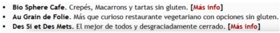

PARIS
-
Supermercados con marcas sin gluten
Carrefour, Monoprix, Biocoop y City
-
La Maison du Sans Gluten
12 Rue d'Hauteville
Tienda especializada 100% sin gluten.
28’ del hotel
-
Café Maraeva
Café 100% sin gluten y sin lactosa.
Especialidad en waffles dulces y salados.
34’ del hotel
-
Yummy And Guiltfree
Gofres dulces y salados 100% sin gluten.
3 Rue du Temple
45’ del hotel
-
Riz Riz
Gofrería cercana a Les Halles.
40’ del hotel
-
Wild & The Moon
Cafeterías veganas, orgánicas y sin gluten.
Bowls y snacks para llevar.
40’ del hotel
-
Chambelland Paris
Panadería con panes, focaccias y dulces.
Cerca de Plaza de la República.
28’ del hotel
-
Maison Plumé
Pastelería sin gluten.
48’ del hotel
-
Helmut Newcake
Pastelería cerca del Louvre.
Todo sin gluten y espectacular.
-
Copains
Pastelería 100% sin gluten.
Cerca del Forum Les Halles.
39’ del hotel
-
Loulou
Cafetería y brunch sin gluten.
Barrio Latino.
24’ del hotel
-
Breizh Café
Galettes sin gluten.
Barrio Le Marais.
50’ del hotel
-
Ladurée
Macarons con opciones sin gluten.
28’ del hotel
-
Grom
Helados italianos 100% sin gluten.
-
Little Nona
Pizzería 100% sin gluten.
Cerca del Arco de Triunfo.
37’ del hotel
-
Kapunka
Cantina tailandesa.
Muy recomendable.
30’ del hotel
-
La Guinguette d’Angèle
Comida para llevar sin gluten.
34 Rue Coquillière.
28’ del hotel
-
Cococo
Comida japonesa para llevar 100% sin gluten.
27’ del hotel
-
Tasca
Restaurante italiano.
Campos Elíseos.
56’ del hotel
-
NoGlu
Pioneros sin gluten en París.
39’ del hotel
-
VegetHalles
Restaurante vegetariano con opciones sin gluten.
35’ del hotel
-
Le Pont Traversé
Cerca de Jardines de Luxemburgo.
52’ del hotel
-
Hard Rock Cafe Paris
Opciones sin gluten.
14 Bd Montmartre.
20’ del hotel

← Volver a restaurante
← Volver al inicio